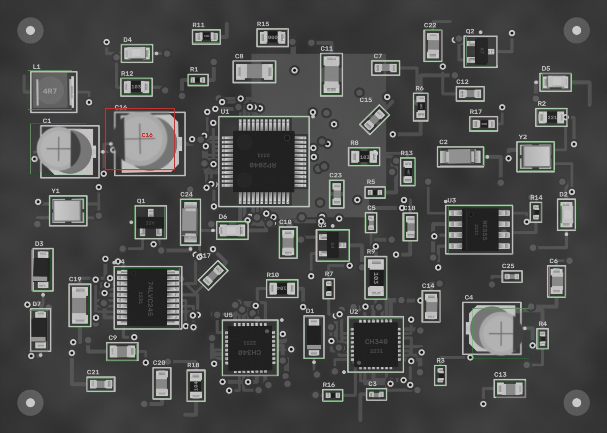
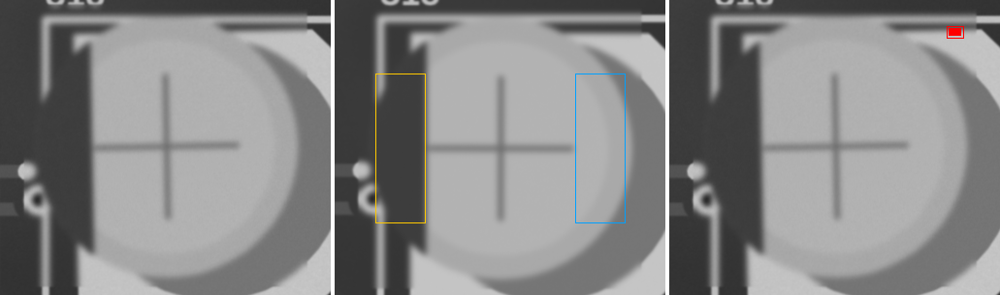

FAIL
2026-10-07 10:05:23 · позиций 61 · FAIL 1 · аномалий вне деталей 0 · невязка фидуциалов 0.01628893378693663 мм · ECC 0.9975

Кроп: живая плата (выровнена) | эталон (жёлтое — метка полярности,
синее — место метки при 180°) | карта отклонений σ.
MISSING — корпус не найден; MISMATCH — на месте не то, что в эталоне (голые площадки, другая деталь,
повреждение); POLARITY — развёрнута на 180° / метка не там; SHIFT / ROTATED — вне допуска;
ANOMALY — локальное отклонение от golden (мост, шарик, лишний припой, посторонний предмет).
| C16 220u · CP_Elec_6.3x7.7 | FAIL ANOMALY |  ncc 0.987 · ncc_thr 0.6 · mad 6.5 · mad_thr 11.8 · mark_ncc {'0': 0.982, '180': -0.671} · dx_mm 0.0 · dy_mm -0.023 · dtheta_deg -0.0 · anomaly_px 104 |
| C1 47u · CP_Elec_5x5.8 | PASS | ncc 0.999 · ncc_thr 0.6 · mad 2.0 · mad_thr 13.3 · mark_ncc {'0': 0.995, '180': -0.653} · dx_mm 0.0 · dy_mm 0.0 · dtheta_deg -0.0 · anomaly_px 0 |
| C10 10n · 0805 | PASS | ncc 0.994 · ncc_thr 0.6 · mad 2.2 · mad_thr 8.8 · dx_mm 0.023 · dy_mm 0.0 · dtheta_deg -0.0 · anomaly_px 0 |
| C11 1u · 1206 | PASS | ncc 0.993 · ncc_thr 0.6 · mad 1.8 · mad_thr 8.0 · dx_mm 0.023 · dy_mm 0.0 · dtheta_deg -0.0 · anomaly_px 0 |
| C12 10n · 0603 | PASS | ncc 0.971 · ncc_thr 0.6 · mad 2.7 · mad_thr 9.4 · dx_mm 0.023 · dy_mm -0.023 · dtheta_deg -0.0 · anomaly_px 0 |
| C13 10u · 0805 | PASS | ncc 0.99 · ncc_thr 0.6 · mad 2.1 · mad_thr 8.1 · dx_mm 0.0 · dy_mm 0.047 · dtheta_deg -0.0 · anomaly_px 0 |
| C14 10n · 0805 | PASS | ncc 0.981 · ncc_thr 0.6 · mad 2.8 · mad_thr 8.5 · dx_mm 0.023 · dy_mm -0.047 · dtheta_deg -0.0 · anomaly_px 0 |
| C15 22p · 0603 | PASS | ncc 0.961 · ncc_thr 0.6 · mad 3.4 · mad_thr 9.7 · dx_mm -0.07 · dy_mm -0.023 · dtheta_deg -0.0 · anomaly_px 0 |
| C17 10u · 0603 | PASS | ncc 0.979 · ncc_thr 0.6 · mad 2.6 · mad_thr 9.5 · dx_mm -0.023 · dy_mm -0.023 · dtheta_deg -0.0 · anomaly_px 0 |
| C18 10n · 0603 | PASS | ncc 0.967 · ncc_thr 0.6 · mad 2.4 · mad_thr 10.1 · dx_mm 0.0 · dy_mm 0.047 · dtheta_deg -0.0 · anomaly_px 0 |
| C19 22p · 1206 | PASS | ncc 0.994 · ncc_thr 0.6 · mad 1.8 · mad_thr 8.0 · dx_mm -0.023 · dy_mm -0.023 · dtheta_deg -0.0 · anomaly_px 0 |
| C2 Tantalum_Case-A · Tantalum_Case-A | PASS | ncc 0.981 · ncc_thr 0.6 · mad 2.8 · mad_thr 8.0 · mark_ncc {'0': 0.986, '180': 0.184} · dx_mm 0.023 · dy_mm 0.0 · dtheta_deg -0.0 · anomaly_px 0 |
| C20 4u7 · 0805 | PASS | ncc 0.996 · ncc_thr 0.6 · mad 1.7 · mad_thr 8.2 · dx_mm 0.023 · dy_mm 0.0 · dtheta_deg -0.0 · anomaly_px 0 |
| C21 4u7 · 0603 | PASS | ncc 0.953 · ncc_thr 0.6 · mad 4.7 · mad_thr 9.3 · dx_mm 0.023 · dy_mm -0.023 · dtheta_deg -0.0 · anomaly_px 0 |
| C22 4u7 · 0805 | PASS | ncc 0.99 · ncc_thr 0.6 · mad 2.4 · mad_thr 8.3 · dx_mm -0.023 · dy_mm -0.023 · dtheta_deg -0.0 · anomaly_px 0 |
| C23 22p · 0603 | PASS | ncc 0.982 · ncc_thr 0.6 · mad 3.8 · mad_thr 9.5 · dx_mm 0.0 · dy_mm 0.0 · dtheta_deg -0.0 · anomaly_px 0 |
| C24 Tantalum_Case-A · Tantalum_Case-A | PASS | ncc 0.967 · ncc_thr 0.6 · mad 3.5 · mad_thr 20.4 · mark_ncc {'0': 0.992, '180': 0.785} · dx_mm -0.023 · dy_mm 0.023 · dtheta_deg -0.0 · anomaly_px 0 |
| C25 100n · 0402 | PASS | ncc 0.986 · ncc_thr 0.6 · mad 4.7 · mad_thr 12.8 · dx_mm -0.023 · dy_mm 0.0 · dtheta_deg -0.0 · anomaly_px 0 |
| C3 22p · 0402 | PASS | ncc 0.952 · ncc_thr 0.6 · mad 7.1 · mad_thr 9.8 · dx_mm 0.047 · dy_mm -0.023 · dtheta_deg -0.0 · anomaly_px 0 |
| C4 100u · CP_Elec_5x5.8 | PASS | ncc 0.997 · ncc_thr 0.6 · mad 3.0 · mad_thr 12.1 · mark_ncc {'0': 0.984, '180': -0.34} · dx_mm -0.023 · dy_mm 0.0 · dtheta_deg -0.0 · anomaly_px 0 |
| C5 10n · 0402 | PASS | ncc 0.978 · ncc_thr 0.6 · mad 4.4 · mad_thr 13.7 · dx_mm 0.023 · dy_mm 0.0 · dtheta_deg -0.0 · anomaly_px 0 |
| C6 4u7 · 0805 | PASS | ncc 0.993 · ncc_thr 0.6 · mad 2.3 · mad_thr 8.2 · dx_mm -0.023 · dy_mm 0.0 · dtheta_deg -0.0 · anomaly_px 0 |
| C7 10u · 0603 | PASS | ncc 0.987 · ncc_thr 0.6 · mad 2.6 · mad_thr 9.6 · dx_mm 0.047 · dy_mm 0.0 · dtheta_deg -0.0 · anomaly_px 0 |
| C8 1u · 1206 | PASS | ncc 0.991 · ncc_thr 0.6 · mad 2.0 · mad_thr 7.9 · dx_mm 0.023 · dy_mm 0.0 · dtheta_deg -0.0 · anomaly_px 0 |
| C9 10u · 0805 | PASS | ncc 0.983 · ncc_thr 0.6 · mad 2.1 · mad_thr 8.2 · dx_mm 0.047 · dy_mm -0.023 · dtheta_deg -0.0 · anomaly_px 0 |
| D1 SOD-123 · SOD-123 | PASS | ncc 0.992 · ncc_thr 0.6 · mad 0.8 · mad_thr 6.9 · mark_ncc {'0': 0.979, '180': 0.543} · dx_mm -0.047 · dy_mm -0.023 · dtheta_deg -0.0 · anomaly_px 0 |
| D2 LED_0805 · LED_0805 | PASS | ncc 0.988 · ncc_thr 0.6 · ncc_180 0.763 · mad 1.8 · mad_thr 9.1 · mark_ncc {'0': 0.0, '180': 0.0} · dx_mm 0.023 · dy_mm -0.047 · dtheta_deg -0.0 · anomaly_px 0 |
| D3 SOD-123 · SOD-123 | PASS | ncc 0.984 · ncc_thr 0.6 · mad 1.4 · mad_thr 7.3 · mark_ncc {'0': 0.696, '180': 0.079} · dx_mm 0.0 · dy_mm -0.023 · dtheta_deg -0.0 · anomaly_px 0 |
| D4 LED_0805 · LED_0805 | PASS | ncc 0.992 · ncc_thr 0.6 · ncc_180 0.813 · mad 2.0 · mad_thr 8.8 · mark_ncc {'0': 0.0, '180': 0.0} · dx_mm -0.047 · dy_mm -0.023 · dtheta_deg -0.0 · anomaly_px 0 |
| D5 LED_0805 · LED_0805 | PASS | ncc 0.989 · ncc_thr 0.6 · ncc_180 0.81 · mad 3.6 · mad_thr 9.8 · mark_ncc {'0': 0.0, '180': 0.0} · dx_mm -0.023 · dy_mm -0.047 · dtheta_deg -0.0 · anomaly_px 0 |
| D6 LED_0805 · LED_0805 | PASS | ncc 0.985 · ncc_thr 0.6 · ncc_180 0.921 · mad 2.5 · mad_thr 11.9 · mark_ncc {'0': 0.0, '180': 0.0} · dx_mm -0.093 · dy_mm 0.0 · dtheta_deg -0.0 · anomaly_px 0 |
| D7 SOD-123 · SOD-123 | PASS | ncc 0.993 · ncc_thr 0.6 · mad 2.1 · mad_thr 7.3 · mark_ncc {'0': 0.86, '180': 0.036} · dx_mm 0.047 · dy_mm 0.0 · dtheta_deg -0.0 · anomaly_px 0 |
| L1 4u7 · L_4x4 | PASS | ncc 0.973 · ncc_thr 0.6 · mad 1.5 · mad_thr 7.6 · dx_mm 0.023 · dy_mm 0.0 · dtheta_deg -0.0 · anomaly_px 0 |
| Q1 J3Y · SOT-23 | PASS | ncc 0.978 · ncc_thr 0.6 · ncc_180 0.306 · mad 1.0 · mad_thr 7.1 · mad_180 3.0 · dx_mm 0.0 · dy_mm 0.047 · dtheta_deg -0.0 · anomaly_px 0 |
| Q2 A7 · SOT-23 | PASS | ncc 0.982 · ncc_thr 0.6 · ncc_180 0.374 · mad 1.2 · mad_thr 7.1 · mad_180 4.8 · dx_mm 0.0 · dy_mm -0.047 · dtheta_deg -0.0 · anomaly_px 0 |
| Q3 S4 · SOT-23 | PASS | ncc 0.953 · ncc_thr 0.6 · ncc_180 0.302 · mad 1.1 · mad_thr 7.0 · mad_180 17.1 · dx_mm -0.023 · dy_mm 0.023 · dtheta_deg -0.0 · anomaly_px 0 |
| R1 0R · 0402 | PASS | ncc 0.98 · ncc_thr 0.6 · mad 6.6 · mad_thr 14.3 · dx_mm -0.047 · dy_mm 0.023 · dtheta_deg -0.0 · anomaly_px 0 |
| R10 100k · 0805 | PASS | ncc 0.995 · ncc_thr 0.6 · mad 3.5 · mad_thr 9.6 · dx_mm 0.023 · dy_mm 0.0 · dtheta_deg -0.0 · anomaly_px 0 |
| R11 10k · 0603 | PASS | ncc 0.989 · ncc_thr 0.6 · mad 4.2 · mad_thr 9.6 · dx_mm -0.07 · dy_mm 0.023 · dtheta_deg -0.0 · anomaly_px 0 |
| R12 10k · 0805 | PASS | ncc 0.994 · ncc_thr 0.6 · mad 4.3 · mad_thr 9.1 · dx_mm -0.023 · dy_mm -0.047 · dtheta_deg -0.0 · anomaly_px 0 |
| R13 100k · 0603 | PASS | ncc 0.989 · ncc_thr 0.6 · mad 3.6 · mad_thr 9.8 · dx_mm -0.047 · dy_mm 0.023 · dtheta_deg -0.0 · anomaly_px 0 |
| R14 220 · 0402 | PASS | ncc 0.991 · ncc_thr 0.6 · mad 3.9 · mad_thr 14.4 · dx_mm 0.0 · dy_mm 0.023 · dtheta_deg -0.0 · anomaly_px 0 |
| R15 0R · 0805 | PASS | ncc 0.997 · ncc_thr 0.6 · mad 3.4 · mad_thr 9.8 · dx_mm 0.0 · dy_mm -0.023 · dtheta_deg -0.0 · anomaly_px 0 |
| R16 100k · 0402 | PASS | ncc 0.987 · ncc_thr 0.6 · mad 7.5 · mad_thr 17.7 · dx_mm -0.023 · dy_mm 0.0 · dtheta_deg -0.0 · anomaly_px 0 |
| R17 0R · 0603 | PASS | ncc 0.983 · ncc_thr 0.6 · mad 6.0 · mad_thr 9.9 · dx_mm 0.0 · dy_mm 0.023 · dtheta_deg -0.0 · anomaly_px 0 |
| R18 100k · 0805 | PASS | ncc 0.995 · ncc_thr 0.6 · mad 3.9 · mad_thr 9.5 · dx_mm 0.0 · dy_mm -0.023 · dtheta_deg -0.0 · anomaly_px 0 |
| R2 220 · 0805 | PASS | ncc 0.997 · ncc_thr 0.6 · mad 4.0 · mad_thr 9.8 · dx_mm -0.047 · dy_mm 0.0 · dtheta_deg -0.0 · anomaly_px 0 |
| R3 0R · 0402 | PASS | ncc 0.968 · ncc_thr 0.6 · mad 7.9 · mad_thr 13.6 · dx_mm 0.023 · dy_mm 0.07 · dtheta_deg -2.0 · anomaly_px 0 |
| R4 10k · 0402 | PASS | ncc 0.989 · ncc_thr 0.6 · mad 7.0 · mad_thr 15.6 · dx_mm 0.023 · dy_mm 0.0 · dtheta_deg -0.0 · anomaly_px 0 |
| R5 100k · 0402 | PASS | ncc 0.993 · ncc_thr 0.6 · mad 4.5 · mad_thr 18.4 · dx_mm 0.023 · dy_mm 0.0 · dtheta_deg -0.0 · anomaly_px 0 |
| R6 10k · 0603 | PASS | ncc 0.982 · ncc_thr 0.6 · mad 5.0 · mad_thr 10.9 · dx_mm -0.047 · dy_mm -0.023 · dtheta_deg -0.0 · anomaly_px 0 |
| R7 1k · 0402 | PASS | ncc 0.988 · ncc_thr 0.6 · mad 6.0 · mad_thr 16.8 · dx_mm -0.047 · dy_mm 0.0 · dtheta_deg -0.0 · anomaly_px 0 |
| R8 10k · 0805 | PASS | ncc 0.995 · ncc_thr 0.6 · mad 3.0 · mad_thr 9.7 · dx_mm 0.023 · dy_mm 0.0 · dtheta_deg -0.0 · anomaly_px 0 |
| R9 10k · 1206 | PASS | ncc 0.993 · ncc_thr 0.6 · mad 3.2 · mad_thr 9.1 · dx_mm -0.023 · dy_mm -0.023 · dtheta_deg -0.0 · anomaly_px 0 |
| U1 RP2040 · LQFP-48 | PASS | ncc 0.966 · ncc_thr 0.6 · mad 0.9 · mad_thr 7.1 · mark_ncc {'0': 0.98, '90': 0.084, '180': 0.065, '270': 0.137} · dx_mm 0.0 · dy_mm -0.023 · dtheta_deg -0.0 · anomaly_px 0 |
| U2 CH340 · QFN-32 | PASS | ncc 0.969 · ncc_thr 0.6 · mad 1.0 · mad_thr 7.1 · mark_ncc {'0': 0.99, '90': 0.315, '180': 0.192, '270': 0.309} · dx_mm 0.0 · dy_mm -0.023 · dtheta_deg -0.0 · anomaly_px 0 |
| U3 NE555 · SOIC-8 | PASS | ncc 0.983 · ncc_thr 0.6 · mad 1.1 · mad_thr 7.4 · mark_ncc {'0': 0.964, '180': 0.208} · dx_mm 0.0 · dy_mm -0.047 · dtheta_deg -0.0 · anomaly_px 0 |
| U4 74LVC245 · TSSOP-20 | PASS | ncc 0.933 · ncc_thr 0.6 · mad 1.3 · mad_thr 7.4 · mark_ncc {'0': 0.955, '180': 0.196} · dx_mm -0.023 · dy_mm 0.047 · dtheta_deg -0.0 · anomaly_px 0 |
| U5 CH340 · QFN-32 | PASS | ncc 0.965 · ncc_thr 0.6 · mad 2.1 · mad_thr 7.8 · mark_ncc {'0': 0.993, '90': 0.105, '180': 0.116, '270': 0.116} · dx_mm 0.0 · dy_mm -0.023 · dtheta_deg -0.0 · anomaly_px 0 |
| Y1 Crystal_SMD_3225 · Crystal_SMD_3225 | PASS | ncc 0.985 · ncc_thr 0.6 · mad 3.6 · mad_thr 13.6 · dx_mm -0.023 · dy_mm 0.023 · dtheta_deg -0.0 · anomaly_px 0 |
| Y2 Crystal_SMD_3225 · Crystal_SMD_3225 | PASS | ncc 0.989 · ncc_thr 0.6 · mad 8.2 · mad_thr 15.5 · dx_mm 0.0 · dy_mm -0.023 · dtheta_deg -0.0 · anomaly_px 0 |